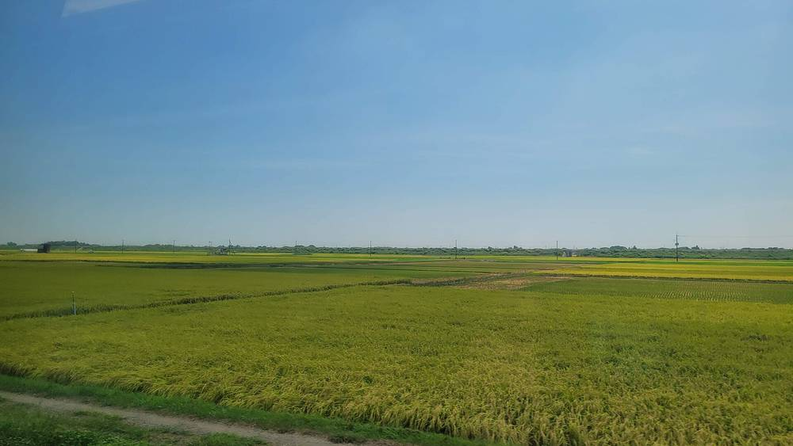

일본 플래티넘 대상, 지열 전기 판매 수익을 지역 방재에 쓰는 사업에 대상…소사시 시민 영농형 태양광은 우수상

제14회 시상식 도쿄서 열려, 최종 심사 11건 중 대상 3건…경작 포기지를 살리며 전기 판매 수입 일부를 경작 위탁료로 돌리는 지바현 소사시 시민 단체 사업도 상 받아
지열 발전으로 번 돈을 지역 과제 해결에 쓰는 일본의 지역 사업이 11월 5일 도쿄에서 열린 제14회 플래티넘 대상 시상식에서 대상과 경제산업대신상을 받았다. 수상 주체는 NTT, NTT 아노드 에너지, 합동회사 와이타회(わいた会), 후루사토 열전(ふるさと熱電), NTT 서일본 구마모토 지점, 지역창생Co디자인연구소이며, 지열 발전 전기를 판 수익을 방재 기반시설 개수 같은 지역 과제에 쓰고 있다. 지바현 소사시에서 경작 포기지를 되살리면서 영농형 태양광 발전을 함께 해 온 TERRA·시민에너지치바(市民エネルギーちば)·소사 오히사마바타케(匝瑳おひさま畑)는 우수상을 받았는데, 이들은 전기 판매 수입 일부를 농업법인에 주는 경작 위탁료 등에 쓴다. 오이타현 히메시마촌 등이 재생에너지로 충전한 전기차를 관광객에게 빌려주는 사업도 우수상에 이름을 올렸다. 올해 상은 최종 심사에 오른 지자체·기업 등의 사업 11건 가운데 대상 3건을 고르고 나머지 8건에 우수상을 줬다. 플래티넘 대상은 일반사단법인 플래티넘 구상 네트워크 등이 주최하고 총무성·경제산업성 등이 후원한다.
시민에너지 관점
재생에너지 사업이 지역에서 환영받느냐는 결국 그 돈이 어디로 가느냐에 달려 있고, 이번에 상을 받은 두 사업은 전기 판매 수익을 방재 시설과 농사 위탁료라는 눈에 보이는 지역 몫으로 돌렸다. 발전소가 들어오면 이익은 밖으로 나가고 부담만 남는다는 우려가 크지만, 수익의 쓰임새를 처음부터 지역 과제에 묶어 두면 주민은 사업을 지켜보는 쪽에서 함께 꾸려 가는 쪽으로 바뀐다. 소사시처럼 시민 단체가 나서 경작을 멈춘 땅을 되살리며 발전하는 구조는 농지와 발전이 부딪친다는 논쟁에 대한 현실적인 답이기도 하다. 국내에서도 재생에너지 수익을 마을 방재·영농 지원 같은 지역 과제에 쓰도록 정하고, 주민과 지역 조직이 발전 사업의 주인이 되도록 제도를 다듬어야 한다.
출처: 時事通信 2026-11-05 기자 미표기 원문 보기
출처: 時事通信(야후 재게재, 수상 목록 전체) 2026-11-05 기자 미표기 원문 보기
プラチナ大賞、地熱発電の売電収益を地域の防災に充てる事業に大賞…匝瑳市の市民による営農型太陽光は優秀賞
第14回表彰式が東京で開催、最終審査11件から大賞3件…耕作放棄地を再生しつつ売電収入の一部を耕作委託料に回す千葉県匝瑳市の市民団体の取り組みも受賞
地熱発電で得た収益を地域の課題解決に生かす事業が、11月5日に東京で開かれた第14回プラチナ大賞の表彰式で大賞・経済産業大臣賞を受けた。受賞したのはNTT、NTTアノードエナジー、合同会社わいた会、ふるさと熱電、NTT西日本熊本支店、地域創生Coデザイン研究所で、地熱発電の売電収益を防災インフラの改修など地域の課題に充てている。千葉県匝瑳市で耕作放棄地の再生と営農型太陽光発電を両立させてきたTERRA、市民エネルギーちば、匝瑳おひさま畑は優秀賞を受け、売電収入の一部を農業法人への耕作委託料などに使っている。大分県姫島村などによる、再生可能エネルギーで充電した電気自動車を観光客に貸し出す事業も優秀賞に選ばれた。今回は最終審査に残った自治体や企業などの取り組み11件から大賞3件を選び、残る8件を優秀賞とした。プラチナ大賞は一般社団法人プラチナ構想ネットワークなどが主催し、総務省・経済産業省などが後援している。
市民エネルギーの視点
再生可能エネルギー事業が地域に歓迎されるかどうかは、結局その収益がどこへ向かうかにかかっており、今回受賞した二つの事業は売電収益を防災施設や耕作委託料という目に見える地域の取り分に回した。発電所ができても利益は外へ出て負担だけが残るという懸念は根強いが、収益の使い道を最初から地域の課題に結び付けておけば、住民は事業を見守る側から共に担う側へと変わる。匝瑳市のように市民団体が耕作をやめた土地をよみがえらせながら発電する仕組みは、農地と発電がぶつかるという論争への現実的な答えでもある。韓国でも再生可能エネルギーの収益を集落の防災や営農支援など地域の課題に充てるよう定め、住民と地域の組織が発電事業の持ち主になれるよう制度を整えるべきだ。
出典: 時事通信 2026-11-05 記者名なし 原文を読む
出典: 時事通信（Yahoo!ニュース転載、受賞一覧） 2026-11-05 記者名なし 原文を読む
日本白金大奖：把地热售电收益用于地方防灾的项目获大奖…匝瑳市市民农光互补获优秀奖
第14届颁奖典礼在东京举行，从进入终审的11个项目中选出3个大奖…千叶县匝瑳市市民团体复垦弃耕地、把部分售电收入用作耕作委托费的项目也获奖
一个把地热发电收益用于解决地方课题的日本地方项目，在11月5日于东京举行的第14届白金大奖颁奖典礼上获得大奖和经济产业大臣奖。获奖方为NTT、NTT Anode Energy、合同会社わいた会、ふるさと熱電、NTT西日本熊本分公司和地域创生Co设计研究所，他们把地热发电的售电收益用于防灾基础设施改造等地方课题。在千叶县匝瑳市一边复垦弃耕地、一边开展农光互补发电的TERRA、市民能源千叶（市民エネルギーちば）和匝瑳おひさま畑获得优秀奖，他们把部分售电收入用于支付给农业法人的耕作委托费等。大分县姬岛村等用可再生能源充电、向游客出租电动汽车的项目也获得优秀奖。本届从进入终审的地方政府、企业等11个项目中选出3个大奖，其余8个获优秀奖。白金大奖由一般社团法人白金构想网络等主办，总务省、经济产业省等提供支持。
市民能源视角
可再生能源项目能否在地方受到欢迎，归根结底取决于钱流向哪里；这次获奖的两个项目把售电收益转化为防灾设施和耕作委托费这样看得见的地方份额。人们常担心电站建起来后利润外流、只留下负担，但如果从一开始就把收益用途与地方课题绑在一起，居民就会从旁观者变成共同经营者。像匝瑳市那样由市民团体出面、在复垦停耕土地的同时发电的结构，也是对"农地与发电相冲突"之争的现实回答。韩国也应规定把可再生能源收益用于村庄防灾、农业支持等地方课题，并完善制度，让居民和地方组织成为发电项目的主人。
来源: 时事通信社 2026-11-05 未署名 查看原文
来源: 时事通信社（雅虎新闻转载，获奖名单全文） 2026-11-05 未署名 查看原文
Japan's Platinum Grand Prize goes to a project spending geothermal power revenue on local disaster prevention; citizen-run agrivoltaics in Sosa wins a merit award
At the 14th ceremony in Tokyo, three grand prizes were chosen from 11 finalists; citizen groups in Sosa, Chiba, that revive abandoned farmland and put part of their power sales toward farming contract fees were also honoured
A Japanese local project that uses income from geothermal power to tackle community problems won the Grand Prize and the Minister of Economy, Trade and Industry Award at the 14th Platinum Grand Prize ceremony in Tokyo on 5 November. The winners, NTT, NTT Anode Energy, Waitakai LLC (わいた会), Furusato Netsuden (ふるさと熱電), NTT West's Kumamoto branch and the Regional Revitalization Co-Design Institute, spend revenue from selling geothermal electricity on local needs such as upgrading disaster-prevention infrastructure. TERRA, Shimin Energy Chiba (市民エネルギーちば) and Sosa Ohisama Batake (匝瑳おひさま畑), which have combined the revival of abandoned farmland with agrivoltaic generation in Sosa, Chiba Prefecture, received a merit award; they use part of their electricity sales to pay farming contract fees to an agricultural corporation, among other things. A project led by Himeshima village in Oita Prefecture and others that rents electric vehicles charged with renewable power to tourists also won a merit award. This year three grand prizes were selected from 11 finalist projects by local governments, companies and others, with the remaining eight receiving merit awards. The prize is organised by the Platinum Society Network and others, with backing from the internal affairs and economy ministries, among others.
Citizen Energy View
Whether a renewable energy project is welcomed locally comes down to where the money goes, and the two winning energy projects turned their power sales into visible local benefits: disaster-prevention facilities and farming contract fees. Many fear that when a power plant arrives the profits leave and only the burdens stay, but tying the use of revenue to local needs from the outset turns residents from onlookers into co-managers. The Sosa model, in which citizen groups generate power while bringing idle farmland back into use, is also a practical answer to the argument that farmland and generation must clash. Korea should likewise require renewable energy income to go toward local needs such as village disaster prevention and farming support, and shape its rules so that residents and local organisations can own the generation projects.
Source: Jiji Press 2026-11-05 No byline Read the original
Source: Jiji Press (Yahoo! News Japan repost, full list of winners) 2026-11-05 No byline Read the original